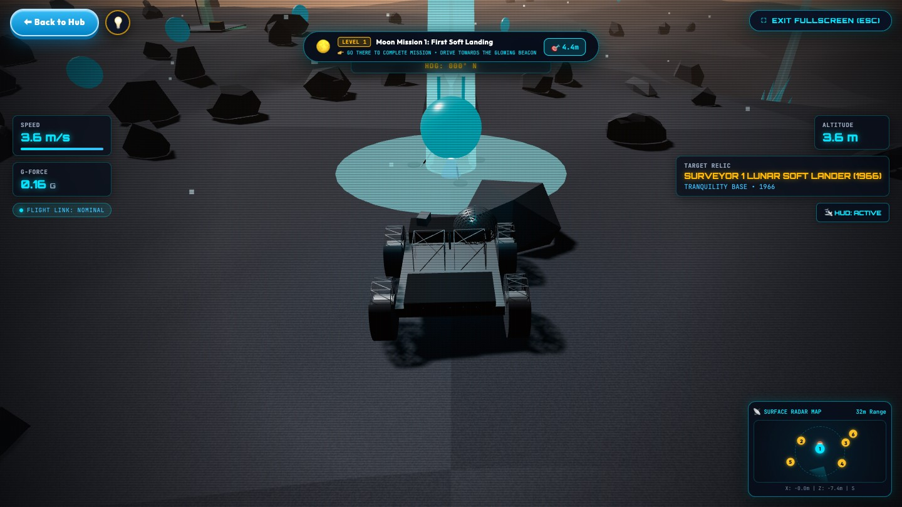
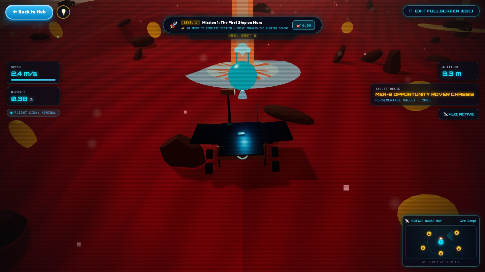
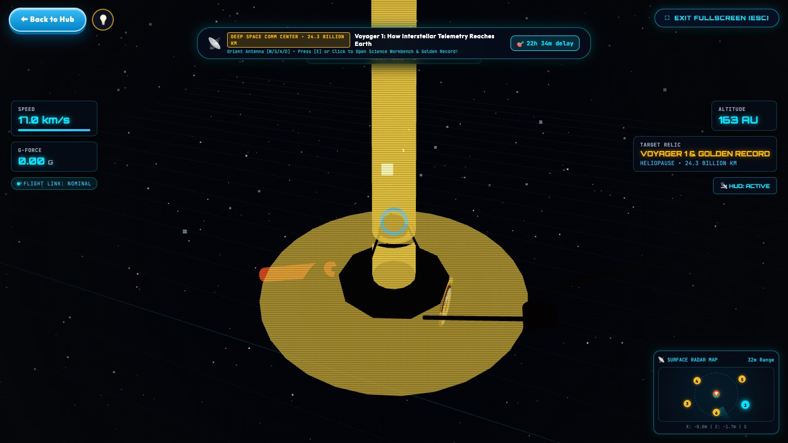

Find the real robots and spacecraft NASA left behind on the Moon, on Mars and in deep space!
Drive a rover, scan each relic and discover its story — in English and Bengali.

🌙
The Moon
Find the Apollo and Surveyor landers

🔴
Mars
Find the Opportunity rover, lost in a dust storm

🛰️
Voyager 1 · Deep Space
Talk to a probe 24 billion km away
🚙Drive a roverExplore other worlds yourself
🔍Scan the relicsUncover the story of each machine
🤖Pick a robot buddyEcho, Nova or Orion
🧪Play in science labs4 hands-on space experiments
🏅Win badges…and a Master Certificate!
❓Take the space quizHow much do you know?
Scan & Blast Off!
Scan the code and start your space adventure!
1Open the phone camera and point it at the code
2Tap the link — the game opens
3Type your name and start playing! 🚀
nasa-2k26.vercel.app
✔ Totally free · ✔ Nothing to install · ✔ Works on phones, tablets & computers